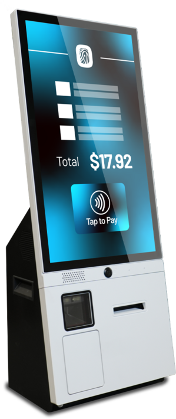

Comedores corporativos sin filas ni desperdicio.
Vamo Mesa para la operación de Newrest en las oficinas corporativas de Nike.

vamo mesa
· noviembre 2026

Newrest México, a escala nacional.
0
alimentos servidos al día
Business & Industry desde 2025, sobre su catering aéreo en México desde 1998. Certificaciones ISO 9001, Distintivo H, ESR y EcoVadis.
Fuente: newrest.eu/es/nuestra-red/mexico
Un comedor corporativo pierde dinero y confianza en cinco lugares.
- 01
Filas en hora pico. Todos llegan entre 13:00 y 14:30.
- 02
Producción a ciegas. Merma o platillos agotados.
- 03
Beneficio manual. Vales y listas difíciles de auditar.
- 04
Inventario desconectado. Faltantes que se descubren tarde.
- 05
Satisfacción sin datos. La queja llega antes que el dato.
Y el cliente pide reportes de consumo, tiempos y satisfacción.
Vamo Mesa conecta al colaborador, la cocina y la administración.
Colaborador
- Precompra
- Celular o web, con su beneficio.
- Kiosco táctil
- Beneficio, tarjeta o NFC.
- Encuesta
- Califica su comida en 30 segundos.
Cocina
- Portal de menú
- Día o semana, premium y grab & go.
- Pase sin papel
- Tablero táctil o ticket térmico.
- Inventario
- Recetas, entradas, mermas y alertas.
Administración
- Indicadores
- Aprovechamiento, sobrantes y beneficio.
- Tiempos
- Preparación y tiempo en piso.
- Reportes
- CSV para ERP o nómina.
Del menú a la mesa en cinco pasos.
- 01
Ve el menú de la semana. Porciones, kcal y precio.
- 02
Aparta y paga con su beneficio. Lo premium, con tarjeta.
- 03
Recibe su código. La cocina lo ve al instante.
- 04
Recoge cuando está listo. Sin fila.
- 05
Califica su comida. Encuesta por correo.

Dos canales, un solo inventario.
 Portal web: menú de la semana y pago con beneficio.
Portal web: menú de la semana y pago con beneficio.
 Kiosco: número de empleado y NIP, o tarjeta.
Kiosco: número de empleado y NIP, o tarjeta.
Capturas del demo en vivo
Todo lo que se pide y se pidió, en vivo.

- Tablero táctil de pase con alerta de demoras
- Ticket de 80 mm con impresión automática
- Menú por formulario o CSV
- Inventario con recetas, entradas y mermas
- Cancelaciones que regresan beneficio e inventario

Decisiones con datos, por comedor y por día.
Aprovechamiento del menú, sobrantes y su costo, uso del beneficio, tiempos de servicio, satisfacción y horas pico.
Exportables a CSV para ERP o nómina.
Cada comida termina con una pregunta: ¿qué tal estuvo?
La encuesta llega por correo al entregar el pedido y la respuesta va directo a la cocina, por platillo y por área.
Kiosco Summit y pantallas de servicio.

- Pago cashless: tarjeta, celular o reloj por NFC
- Lector de QR para recoger o identificarse
- Fila rápida para quien apartó
- Pantalla de pase, pantalla de salida e impresora térmica
Imágenes del kiosco Summit cortesía de Touch Dynamic, aliado de hardware de Vamo.
Compra total o leasing por equipo. Recomendamos leasing.
| Compra total | Leasing por equipo |
|---|
| Inversión inicial | Desembolso completo (CAPEX) | Sin inversión inicial: renta mensual (OPEX) |
| Escalamiento | Cada sitio es una nueva compra | Se agregan o retiran equipos por comedor |
| Mantenimiento | Después de la garantía, a cargo de Newrest | Mantenimiento, reemplazo y soporte incluidos |
| Renovación | El equipo envejece en el balance | Renovación al término del plazo |
| Contratos | El activo sobrevive al contrato | El plazo empata con el contrato del comedor |
| Contabilidad | Activo que se deprecia | Suele registrarse como gasto operativo (validar con fiscal) |
La propuesta económica se presenta en una siguiente etapa.
Cumplimiento total, en la nube del cliente.
Privacidad de datos
- Ley de protección de datos
- Aviso de privacidad y consentimiento.
- Datos mínimos
- Número de empleado, área y correo.
- Protección
- Cifrado, acceso por roles y bitácoras.
- Pagos
- Vía procesador certificado PCI DSS.
Integrado a su nube
- Infraestructura
- Azure, AWS o Google Cloud del cliente.
- Acceso
- Inicio de sesión único con su directorio.
- Beneficio
- Conectado a nómina o proveedor de vales.
- Reportes
- Hacia ERP y BI vía API.
Empezamos en un comedor, escalamos a la red.
1
Diagnóstico
Visita al comedor de Nike, menú, recetas, beneficio e integraciones.
2
Piloto
Instalación, capacitación y línea base: filas, mermas, tiempos y satisfacción.
3
Escalamiento
Réplica en la red Newrest con tablero comparativo por sitio.
Pruébalo en cotizador.menteia.com/mesa
- Portal del colaborador: número 10021 a 10028, NIP 1234
- Kiosco táctil
- Manager de cocina con indicadores
- Pase sin papel y pantalla de salida
Comedor de ejemplo con datos ficticios.
Hagamos el piloto en el comedor de Nike.
- 01
Visita técnica al comedor corporativo
- 02
Definir la modalidad (recomendamos leasing por equipo)
- 03
Alcance de integraciones: nube, inicio de sesión, beneficio y ERP
- 04
Propuesta económica y calendario del piloto
Gracias · vamo mesa